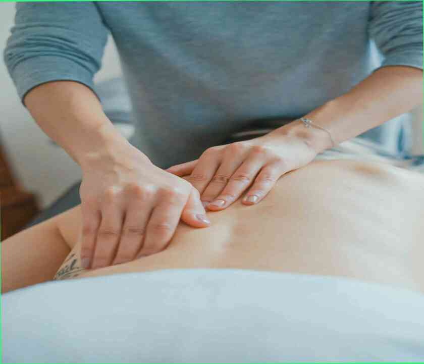
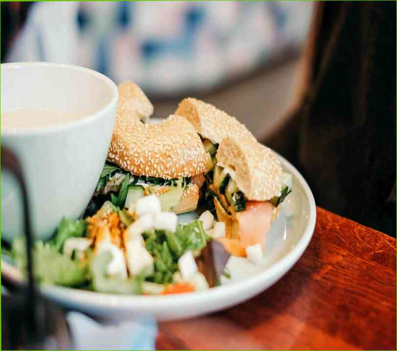

Natto-estranho e saudável comida Japonesa
Natto é um especial de comida tradicional Japonesa, que é preparado a partir da fermentação de grãos de soja em um especial de sourdough. Como a maiori...
Leia mais

Top 6 alimentos que contêm apenas 10 calorias em um copo
que Você pode dar ao luxo de comer alto teor calórico dos alimentos em vidro. Estes alimentos são excelentes para perda de peso, porque eles são ricos e...
Leia mais

A melhor perda de peso simuladores
Quando somos jovens, é apaixonado por esportes. Queremos "passar o peso" e tornar a perfeita imagem de um adolescente. Equipamento desportivo é perfeito p...
Leia mais